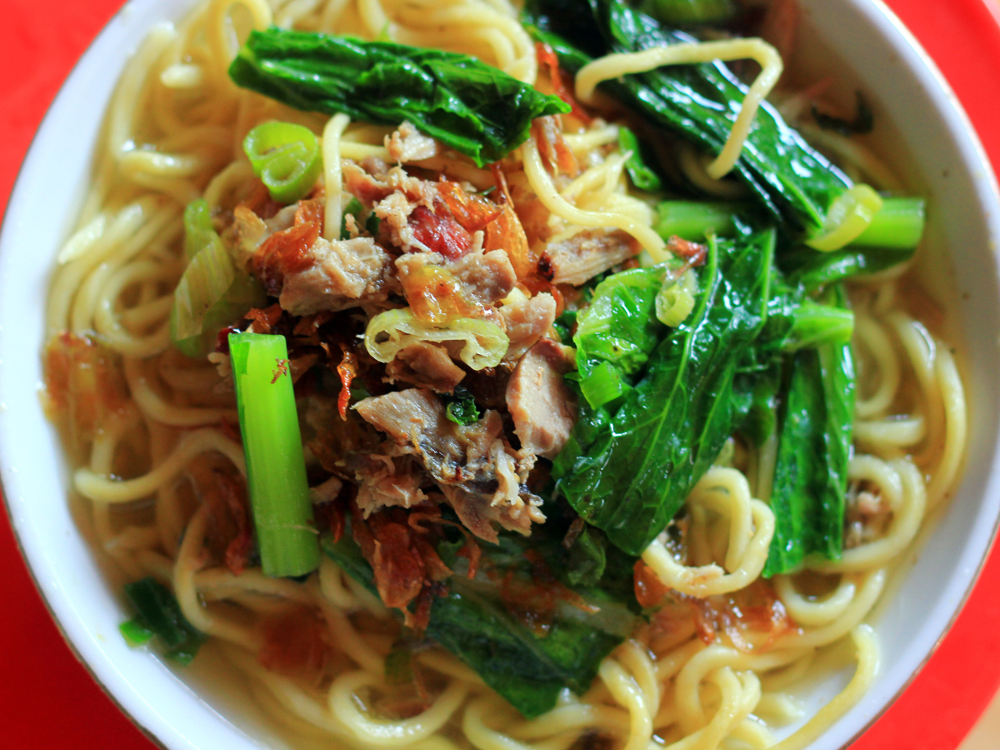

Mie Cakalang
Mie Cakalang adalah hidangan mie khas Manado yang disajikan dengan ikan cakalang asap suwir dan bumbu pedas gurih.
Bahan-bahan:
- 200 gram mie telur / mie kuning
- 150 gram ikan cakalang asap (disuwir)
- 3 siung bawang putih (cincang)
- 5 siung bawang merah (iris)
- 3 cabai merah
- 5 cabai rawit (sesuai selera)
- 1 batang daun bawang (iris)
- 1 ikat sawi hijau (opsional)
- 2 sdm kecap manis
- 1 sdm saus tiram
- Garam dan merica secukupnya
- Air secukupnya
- Minyak untuk menumis
Cara Membuat:
- Rebus mie hingga matang, lalu tiriskan.
- Haluskan cabai, bawang merah, dan bawang putih (atau cincang kasar).
- Tumis bumbu hingga harum.
- Masukkan ikan cakalang suwir, aduk hingga tercampur rata.
- Tambahkan sedikit air, kecap manis, saus tiram, garam, dan merica.
- Masukkan sawi dan daun bawang, masak sebentar.
- Masukkan mie, aduk hingga bumbu meresap.
- Koreksi rasa, angkat dan sajikan hangat.